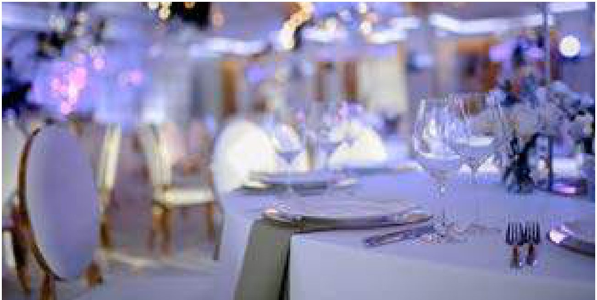

מוטי טרבלסי | הצעת בקרת תאורה
להמחשה בלבד - אינה תיעוד של אולם הלקוחציוד מתומחר
37,375.00 ₪ לפני מע״מ | 44,102.50 ₪ כולל מע״ממחיר ציוד כולל 17 גלאים ו־17 ממשקי PBI עבור 17 חללים, ללא הנחה. 17 נקודות מפסק רגיל באספקת החשמלאי. שירותי תכנון, התקנה, תכנות והפעלה אינם כלולים בסכום הציוד.
כתב כמויות
דגמי בסיס לתמחור מהמחירון הכללי; הבחירה הסופית בתוכנית הביצוע. המחירים בטבלה לפני מע״מ.
17 ממשקי PBI בני 4 כניסות: 555 ₪ ליחידה, 9,435 ₪ בסך הכול לפני מע״מ, כלולים בטבלה ובסיכום. 17 נקודות מפסק רגיל באספקת החשמלאי. הכמויות לפי אישור הלקוח: אחד מכל סוג לכל חלל; מיקומים ושיוך מעגלים בתוכנית הביצוע.
בקר 24 יציאות לאזורים הרגילים. 17 גלאי Siemens לפי דרישת הלקוח. אין דימרים כלל. האולם המרכזי אינו כלול בשליטה או בציוד. בקרת מיזוג אינה כלולה.